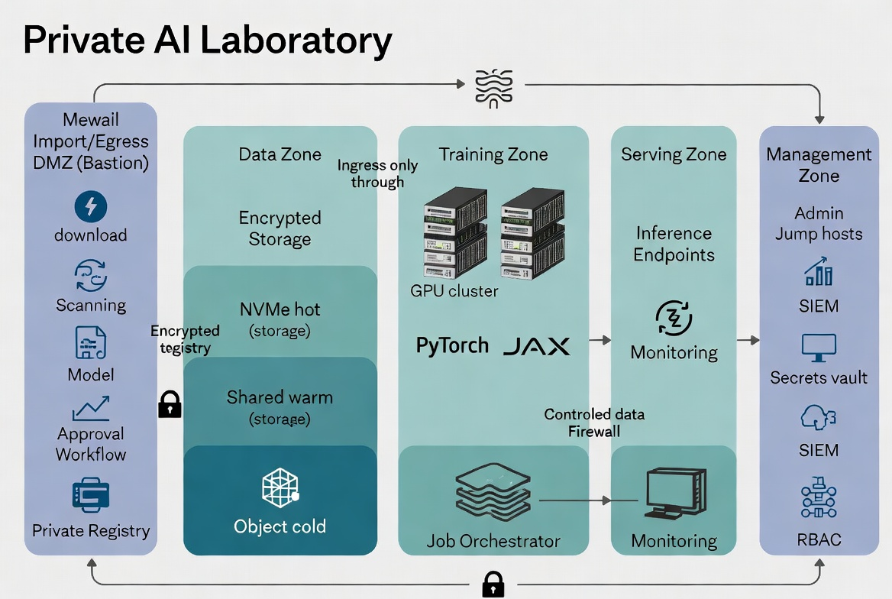

Designing Off-the-Grid AI Lab for Patient to Trial Matching
A Practical Blueprint for Secure, On-Premises Fine-Tuning of Medical AI Models
Executive Summary
Matching patients to clinical trials is a high-value but data-sensitive task. It requires processing protected health information (PHI), medical histories, genomics, and eligibility criteria while meeting strict privacy, compliance, and ethical standards. Public cloud AI services introduce unacceptable risks of data exposure, model supply-chain contamination, and loss of control over proprietary matching logic.
This white paper outlines how to build a privacy-preserving, off-the-grid AI laboratory dedicated to training and fine-tuning models for patient-to-trial matching. The design assumes ePHI or equivalent sensitive data and applies the same physical, network, identity, and audit controls expected in enterprise environments at Meta, Google, or Amazon scale—adapted for healthcare.
“Off-the-grid” here means production training and inference systems have no persistent public internet connectivity. Models, containers, and dependencies are acquired once through a hardened import path, verified, and mirrored into a private registry. All subsequent work occurs in a segmented, auditable environment. The goal is to improve matching accuracy and speed without ever exposing patient data externally.
Use Case and Privacy Goals
Patient-to-trial matching typically involves:
- Ingesting structured and unstructured patient data (EHR extracts, notes, labs, imaging reports, genomics).
- Encoding trial eligibility criteria (inclusion/exclusion from ClinicalTrials.gov or sponsor protocols).
- Scoring or ranking matches while explaining why a patient qualifies or is excluded.
Sensitive elements that must remain internal:
- Direct identifiers and quasi-identifiers.
- Detailed medical history, diagnoses, medications, and outcomes.
- Any derived embeddings or intermediate representations that could leak information.
Core privacy objectives:
- Patient data never leaves controlled infrastructure.
- Model training and inference occur without runtime calls to public endpoints.
- Every access, training run, and model change is logged immutably for audit and incident response.
- The system supports de-identification or privacy-preserving techniques (tokenization, synthetic data augmentation) where feasible before model training.
These goals align with HIPAA-style safeguards, emerging AI safety expectations in healthcare, and the operational need for reproducible, governable matching models.
Reference Architecture
The lab uses a zoned, zero-trust architecture with strict segmentation. Production zones have no public internet routes. A single controlled DMZ/bastion handles all ingress and approved egress.
Primary Zones:
- Import/Egress DMZ (Bastion): The only zone with temporary, whitelisted external connectivity. Used for model acquisition, integrity verification, scanning, and mirroring into the private registry. Also stages incoming patient datasets or trial criteria for classification and controlled movement inward.
- Data Ingestion & Preprocessing Zone: Receives approved data. Performs de-identification, tokenization, quality checks, and feature engineering. Outputs privacy-safe training artifacts to the Data Zone.
- Data Zone: Encrypted, tiered storage (hot NVMe scratch, shared warm storage, cold object/NAS) for curated datasets, embeddings, and versioned artifacts. Access is mediated and logged.
- Training / Fine-Tuning Zone: GPU cluster running hardened containers. Pulls only from the private model registry and approved storage. Writes checkpoints and metrics to designated paths. No outbound internet.
- Model Registry & Serving Zone: Versioned, signed models and inference endpoints for internal use (matching API or dashboard). Models loaded read-only. Internal-only access with strong authentication.
- Management & Audit Zone: Orchestration (Kubernetes/Slurm), monitoring, SIEM, secrets vault, RBAC enforcement, and jump hosts for administration. All actions here are heavily logged.
Data & Model Flow: Patient data → controlled ingestion & preprocessing → approved storage → training jobs pull from private registry → outputs registered or archived internally. Nothing leaves production zones except through the governed DMZ path.
The architecture diagram below illustrates these zones and controlled flows (the same layered pattern applies directly to the medical use case, with added emphasis on the preprocessing step for ePHI).

Physical Infrastructure
Dense GPU workloads for medical models (especially multimodal or larger language models) require serious facility planning.
Key Elements:
- Compute: NVIDIA H100/H200/B200-class or equivalent dense servers (4–8 GPUs per node) with high system RAM and fast local NVMe. Multi-node scaling via InfiniBand or RoCE with GPUDirect RDMA.
- Power & Density: Plan for 80–120 kW per rack in liquid-cooled designs. Include N+1 or 2N UPS, metered PDUs, and redundant power feeds where available.
- Cooling: Liquid cooling (direct-to-chip or immersion) is effectively mandatory above ~40 kW/rack for efficiency and hardware longevity. Include coolant distribution units (CDUs), leak detection, and integration with facility chilled water or dry coolers. Target low PUE.
- Facility Protection (healthcare-grade physical security):
- Badge + biometric or PIN access with logging and escort policies.
- Locked equipment rooms or cages; tamper-resistant or sensor-equipped racks.
- Comprehensive camera coverage with retention and motion analytics.
- Environmental monitoring (temperature, humidity, differential pressure, liquid leaks) tied to alerting.
- Fire detection (VESDA) + clean-agent suppression (Novec 1230 or equivalent) to protect electronics without water damage.
- Backup cooling and environmental controls to prevent thermal throttling or hardware damage during outages.
Power and cooling are first-class design constraints, not afterthoughts. They directly affect achievable model size, training throughput, and long-term operating cost.
Logical Access Controls
Treat the lab like any other system processing ePHI or high-value clinical data.
Core Controls:
- Identity & Access: Centralized IAM with MFA everywhere. Role-based access control (RBAC) with clear separation: Data Stewards (approve datasets), Model Governors (approve models and fine-tunes), ML Engineers (submit training jobs within policy), Auditors (read-only), Platform Ops (infrastructure only).
- Least Privilege & Just-in-Time: No standing admin access on training or serving nodes. Privileged actions require approval workflows and are time-limited.
- Audit Logging: Immutable, tamper-evident logs for every authentication, authorization decision, data access, training job submission, model load, and configuration change. Centralized SIEM for correlation and alerting.
- Encryption: All data at rest (LUKS/SED with centrally managed keys, preferably HSM-backed). Encryption in transit for all storage and control-plane traffic (mTLS).
- Secrets Management: No secrets in images or code. Retrieved from isolated vault at runtime with short TTLs.
- Endpoint Hardening: Admin workstations and jump hosts are hardened (CIS benchmarks, EDR, full-disk encryption, USB control). No personal devices for privileged access.
These controls map directly to healthcare security program expectations and support both internal governance and external audit readiness.
Model Sourcing and Selection
Three practical starting points exist for patient-to-trial matching models. Choose based on task fit, licensing, data requirements, and validation burden.
| Approach | Best For | Advantages | Trade-offs | Example Starting Points |
|---|---|---|---|---|
| General-purpose base model | Broad reasoning + heavy custom adaptation | Flexible; widely available; strong reasoning foundations | Requires substantial high-quality medical data and alignment work | Llama 3.1 / Mistral / Qwen2 variants (permissive licenses) |
| Biomedical / oncology-specialized model | Clinical language, entity recognition, trial semantics | Better medical vocabulary and ontology awareness out of the box | Quality varies; may still need task-specific fine-tuning | OpenMEDLab collections, MEDomicsLab oncology models, Hugging Face biomedical releases |
| Domain-specific model with local fine-tuning | Narrow task (trial eligibility matching) | Strong task performance; easier to govern and validate locally | Requires rigorous curation of labeled matching datasets and ongoing validation | Fine-tune a specialized biomedical model on approved internal matching data |
Selection Criteria:
- Licensing that explicitly permits commercial use and local deployment/mirroring.
- Context length and tokenization suitable for long eligibility criteria and patient notes.
- Availability of tokenizer, config, and modeling code for fully offline use.
- Provenance and release quality (signed releases, documented training data summary, known limitations).
Open-source medical model ecosystems (OpenMEDLab, MEDomicsLab, academic oncology computational groups, and curated Hugging Face medical collections) provide viable starting points. Commercial medical AI vendors may also allow licensed local mirroring—always verify contract terms for offline rights and redistribution restrictions.
Offline Model Operations
Acquisition & Lifecycle Process (never fetch at runtime):
- Controlled Download (DMZ only): On a dedicated, logged bastion workstation with temporary whitelisted access, download from official/trusted sources only.
- Verification: Cryptographic hash (SHA-256+), signature validation where available, file structure and statistical checks, license review.
- Private Mirroring: Push to an internal, authenticated model registry (e.g., Harbor extended for models, MLflow + MinIO, or equivalent) with rich metadata: source, hashes, approval date, approver, intended use, model card.
- Dependency Pinning: Mirror and pin tokenizers, sentencepiece models, container base images (NVIDIA NGC or hardened equivalents), and any required wheels. Rebuild containers internally when practical.
- Approval & Promotion: Formal review by the Model Governance Board before a model version is promoted to the training or serving registry.
- Update, Rollback & Retirement: New versions follow the same gated process. Maintain previous versions for rollback. Retire models with documented rationale and audit trail. Flag and restrict any model if new safety or bias issues emerge.
This process adds controlled latency but eliminates entire classes of supply-chain and runtime exposure risk.
Data Governance and Compliance
Patient Data Handling:
- All inbound data passes through the controlled ingestion/preprocessing zone for classification, de-identification or tokenization where possible, and approval before entering training storage.
- Clear retention policies (e.g., raw identifiers deleted after N days post-project unless legal/regulatory hold; derived artifacts retained per business and compliance needs).
- Cryptographic deletion support where required.
Audit & Incident Response:
- Immutable logs feed SIEM with alerting on anomalies (unusual data volume/access patterns, configuration drift, failed authentications).
- Documented playbooks for suspected data exposure, model misbehavior, or physical compromise. Emphasis on rapid isolation and evidence preservation.
- Regular access reviews, tabletop exercises, and (where appropriate) external audit support.
Validation:
- Matching models require clinical validation (accuracy, fairness, safety) in addition to technical metrics. Maintain human-in-the-loop review for high-stakes decisions and continuous monitoring for drift.
These practices support HIPAA-aligned programs and emerging expectations for trustworthy medical AI.
Implementation Roadmap
Phase 1 – Pilot (4–8 weeks): Minimal viable lab with one hardened GPU node, basic physical controls, DMZ import process for 1–2 approved models, private registry, and simple inference endpoint. Focus on governed import-to-serving flow and initial policy drafting.
Phase 2 – Secure Training Environment (2–4 months): Add GPU cluster capacity, tiered encrypted storage, network segmentation, RBAC/IAM integration, Model Governance Board, preprocessing pipeline for de-identification, and immutable logging. Pilot fine-tuning of a chosen biomedical or general base model on approved internal matching data.
Phase 3 – Production-Grade Operations (4–8 months): Full physical security stack (biometrics, environmental monitoring integrated to SIEM, clean-agent fire suppression), liquid cooling if density requires, automated policy enforcement, staging environment for updates, hardware lifecycle process, and validated matching workflow with audit-ready trails. Achieve readiness for regulated or high-volume use.
Phase 4 – Maturity & Scale (ongoing): Automate more governance workflows, expand validation and monitoring, explore confidential computing features as GPU TEEs mature, and integrate with broader clinical or automation platforms via secure internal APIs.
Start small, prove the controlled flow, then scale while embedding governance.
Conclusion
A privacy-preserving AI lab for patient-to-trial matching is a systems problem, not just a GPU problem. Success requires tight integration of:
- Physical facility controls (secure, environmentally resilient housing for dense compute).
- Network isolation (segmented zones with zero persistent public internet on training and serving systems).
- Healthcare-grade logical controls (RBAC, MFA, immutable audit, encryption, least privilege).
- A trusted offline model supply chain (verified acquisition, private registry, pinned dependencies, formal approval and rollback).
- Strong data governance (controlled ingestion, retention policies, clinical validation, incident readiness).
Organizations that invest in this full stack can fine-tune or adapt powerful models—whether starting from general-purpose foundations or existing biomedical/oncology-specialized collections—while keeping sensitive patient data entirely within controlled boundaries. The result is faster, more accurate trial matching with defensible privacy, compliance posture, and operational sovereignty.
This blueprint provides the practical foundation. Specific implementation details will depend on your threat model, existing facility assets, regulatory environment, and chosen starting models. The principles remain consistent: control the ingress, segment the environment, govern the models, and audit everything.
For architecture workshops, detailed TCO modeling, or implementation support tailored to your clinical automation or AI platform needs, engage your trusted infrastructure and security partners.
Document Control
Classification: Internal / Client-Distribution Appropriate
Review Cycle: Annual or upon significant regulatory or technology changes
This white paper provides practical guidance synthesized from air-gapped deployment patterns, healthcare security expectations, and current open-source medical model ecosystems. Always validate design decisions against your specific legal, regulatory, and clinical requirements.
Discuss this architecture with our team. We design secure, governable AI labs for healthcare and enterprise workloads. Talk to an expert →